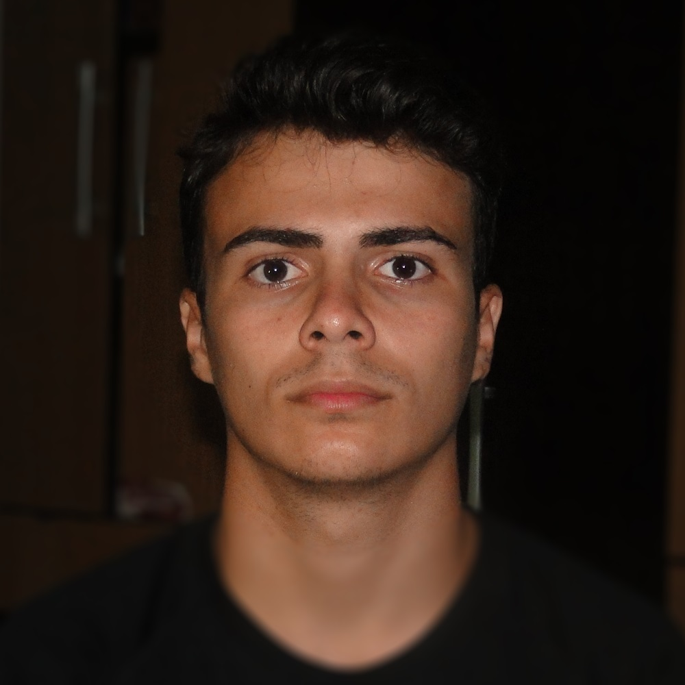

Apresentação
Nascido em Jahu, São Paulo, Brasil, no dia de cinco de julho de dois mil, eu, Luís Otávio Gaido Grizzo, assim como qualquer outro ser humano vive sua vida em busca do que gosta. Ao contrário de muitos não chegarem onde querem ou desistem de seus objetivos sem antes terem dado o melhor de si, busco sempre me dedicar ao maximo a qualquer atividade, seja minha preferida ou não.
Acredito que a união faz a força e por isso o trabalho em equipe é de suma importancia para o sucesso de algo. Formado recentemente no ensino médio juntamente com o curso tecnico de informática encontrei minha maior vocação: programar para WEB! desenvolver Web sites, estrutura-los e administrar seus bancos. Sou capaz de ir afundo para compreender determinado assunto, assim, sempre evoluindo da melhor forma possível!